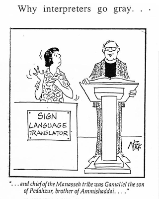
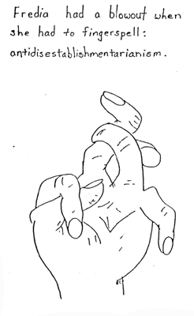

Humor and stories for interpreters: In a spell. Fingerspell, that is.
David Bar-Tzur
Links updated monthly with the help of LinkAlarm.

(The image above is from http://pages.ivillage.com/cl-loluv/deafhardofhearing/id20.html [Deaf humor], which is no longer extant.)
" occdrnig to a rscheearch at an Elingsh uinervtisy, it deosn't mttaer in waht oredr the ltteers in a wrod are, the olny iprmoetnt tihng is taht frist and lsat ltteer is at the rghit pclae. The rset can be a toatl mses and you can sitll raed it wouthit porbelm. Tihs is bcuseae we do not raed ervey lteter by it slef but the wrod as a wlohe."
occdrnig to a rscheearch at an Elingsh uinervtisy, it deosn't mttaer in waht oredr the ltteers in a wrod are, the olny iprmoetnt tihng is taht frist and lsat ltteer is at the rghit pclae. The rset can be a toatl mses and you can sitll raed it wouthit porbelm. Tihs is bcuseae we do not raed ervey lteter by it slef but the wrod as a wlohe."
Webmaster: I included this paragraph (submitted to TERPS-L by our buddy Dan Parvaz the linguist) here to reinforce the thought that we don't need to see every letter in a fingerspelled word to understand it. There actually was no such research, but the fact remains that we can understand it easily by using cloze skills, so look for those initial and final letters!
 nstructor in a theatre class said, "You know that old Carol Burnett show, 'Once upon a Mattress'?" What I saw from the interpreter was "You know, that old Carol Burnett show, "Once upon an Actress'?"
nstructor in a theatre class said, "You know that old Carol Burnett show, 'Once upon a Mattress'?" What I saw from the interpreter was "You know, that old Carol Burnett show, "Once upon an Actress'?"
It was all I could do to just slip in the correct title to the student and promise to explain to my team person when the class took a break.
- Cindy Moore

Deaf individual was signing about what was on the front page (a couple of years ago). I saw "Zsa Zsa Gabor". It was Zanzibar"! Sigh!! Everyone chuckled. . . even me. Everyone lived. . . including me.
- Cindy Herbst
was working with an older gentleman, 60ish, for a medical procedure where he was strapped to the table and could only fingerspell. He also was under the influence of Valium. Throughout the procedure the doc would ask how he was feeling. We were nearing the end and had communicated fine. The man, who sometimes likes to flirt with younger women and play around, fingerspelled what I though was K-I-S-S. I looked around and though he must be talking about the cute nurse and he wanted to kiss her but I juist wanted to clarify. I asked WHAT? and he again spelled K-I-S-S. I stood there and asked one more time. He then signed NEED P-I-S-S. OH, I said. "Excuse me, doctor, but Mr. So and So is needing to use the restroom." GULP ME.
- Keri Brewer
 elying on lipreading to understand fingerspelling is a good strategy, but it can get you into trouble sometimes:
elying on lipreading to understand fingerspelling is a good strategy, but it can get you into trouble sometimes:
"lactose intolerance" was read as "black toast intolerance",
"cave art drawings" ws read as "k-mart drawings",
and "Heart's Ease" was read as "heart cease".
- Cindy Moore
 he interpreter was vocing a pleasant story about activities at Christmas. Two quick fingerspelled words go by ???? D-O-G. Cool, missed the breed, probably, but nothing important. Describing cozy Christmas scene with the dog lying next to the first, etc. etc. etc. ³And then I threw the dog into the fire.² ???What??? Turns out the fingerspelled word was Y-U-L-E L-O-G. Too late!
he interpreter was vocing a pleasant story about activities at Christmas. Two quick fingerspelled words go by ???? D-O-G. Cool, missed the breed, probably, but nothing important. Describing cozy Christmas scene with the dog lying next to the first, etc. etc. etc. ³And then I threw the dog into the fire.² ???What??? Turns out the fingerspelled word was Y-U-L-E L-O-G. Too late!
- Christine A. Smith
t is some comfort that this happened when I was still an interpreting student, but this is not to say that I am now the Queen of fingerspelling. We were practicing fingerspelling recognition by spelling to each other and saying aloud what we thought the word was. My partner spelled T-W-O. Although I saw every letter, all I could do was say aloud "te-woh, te-woh, te-woh?" Anyone have an aspirin?
- David Bar-Tzur
was co-teaching a workshop with Anna Witter-Merithew - an interpreter of some distinction - who admitted to a couple of amazing bloopers working into English. One involved a visit to a church (this is the text of the ASL story), when [fingerspelled name] TAP-SHOULDER. Anna read the name as Vera Murray. Continued to interpret for a minute or two, when she realized that Vera had a distinct physical appearance. . . and she "repaired" by saying, "Due to an interpreter error, the part of the Virgin Mary will be played this evening by Vera Murray." The audience cracked up, of course, and so did those of us who were in the workshop.
- Marina McIntre
 oi was in a 'quasi-legal' situation (for those of you who don't know me, I don't do legal. (Not my bag, others are better, more qualified, etc.) However, I did a situation as a favor to a Deaf friend, an informal case, a conference of sorts. Low stress for all, I was familiar with the situation, blah, blah, Well the Deaf person (again, a friend and someone who I was familiar with, etc) asked a question about records of some kind. The question related to whether or not such records were (fingerspelled word beginning with S, ending with -ed, not many letters between). Now, I am not that dumb, have a good amount of world knowledge, and a lot of legal knowledge (for a tyro [beginner in learning something]), but I COULD NOT GET THAT WORD!!!! It was fingerspelled, oh about 25.5 times, including the Deaf person using VOICE for gosh-sakes. All I could say was "Sea Led. . . See Led. . . C-Led. . ."
oi was in a 'quasi-legal' situation (for those of you who don't know me, I don't do legal. (Not my bag, others are better, more qualified, etc.) However, I did a situation as a favor to a Deaf friend, an informal case, a conference of sorts. Low stress for all, I was familiar with the situation, blah, blah, Well the Deaf person (again, a friend and someone who I was familiar with, etc) asked a question about records of some kind. The question related to whether or not such records were (fingerspelled word beginning with S, ending with -ed, not many letters between). Now, I am not that dumb, have a good amount of world knowledge, and a lot of legal knowledge (for a tyro [beginner in learning something]), but I COULD NOT GET THAT WORD!!!! It was fingerspelled, oh about 25.5 times, including the Deaf person using VOICE for gosh-sakes. All I could say was "Sea Led. . . See Led. . . C-Led. . ."
Took about 2 minutes to realize that the word was "sealed", like sealed with a kiss, sealed records. DUH! Red face. Interpreter slinks out the door and realizes that language, like ourselves, is imperfect.
- Robert Lee
fter a successful voicing assignment with a prominent Deaf person, I was chatting with said individual. I complimented this person on an article of their clothing, and the person responded by saying it had been purchased at "Sweaterland". Knowing of no such store in my area, I further inquired if that place was near their home. Again, the Deaf person said, "No, I got it at 'Sweaterland'." My response was, "Gee, we don't have any of those near where I live." Showing apparent irritation, the Deaf person said, "NO!" Then, slowing up fingerspelling considerably, my stomach sank as I realized that I had been misreading the fingerspelling all along.
Switzerland.
Aaaaaaaaaaaaaaaaaaargh!!!!!!!!!!!!
- Natalie Ungar
Deaf person asked the medical doctor who had just lectured on genetics whether Dr. Essing was related to the effects of this syndrome (interpreter- hunh???) followed by the usual request for clarification, repeated fs until ahhh "(salad) dressing" [not Dr. Essing]. . . sigh. It seems there is a particular spice in some kinds of salad dressing that aggravates the condition. . . (red face. . .)
- Theresa Smith
 Return to the table of contents for "Humor and stories for interpreters".
Return to the table of contents for "Humor and stories for interpreters".

Home